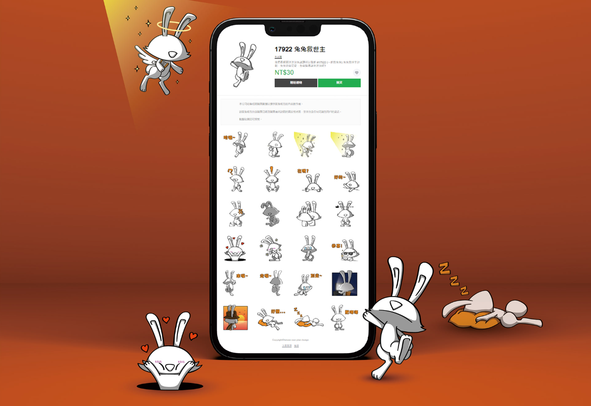
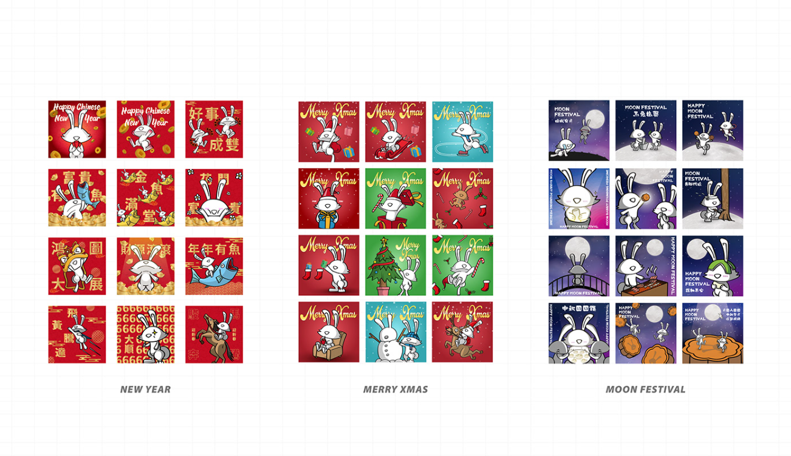
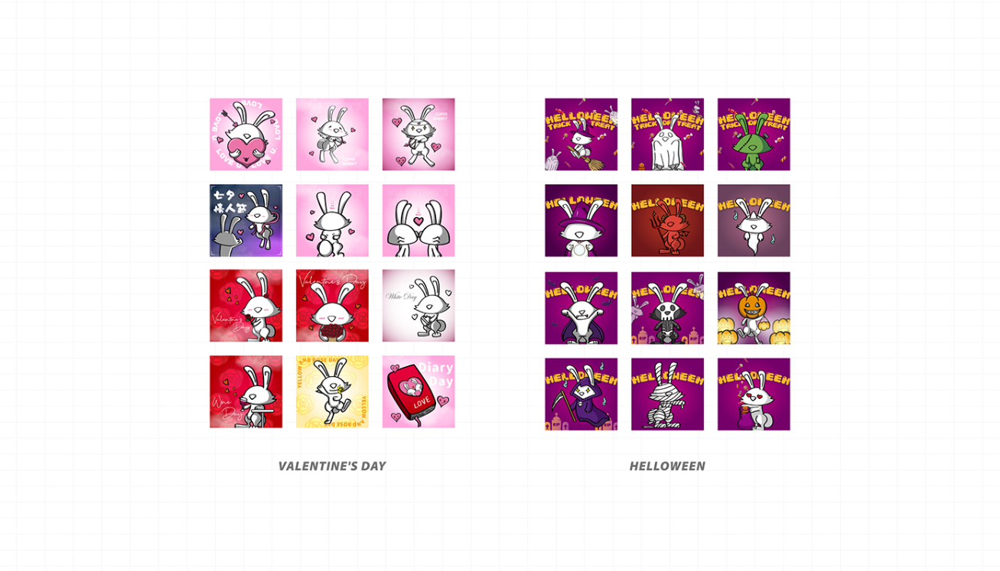

【 小宇宙的爆發 】
在疫情的引響下，創作者多出了許多時間在創作上~亞當兔兔就這樣來到世界了，原先只是興趣與喜好的結果，但發現創作慾望一發不可收拾，各式各樣的造型登場了，享受創作樂趣同時也思考著兔兔亞當的未來發展性，默默的命運把我帶到了浪兔協會，就這樣這個角色找尋到了自己的使命! 號召了一些志同道合的夥伴開始為使命而努力~除了藝術創作的本質~希望兔兔亞當能夠為更多兔兔夥伴找到適合自己的家。
兔兔救世主是 TNP DESIGN 旗下的 IP 角色，17922 取自於一起救兔兔的諧音，透過此角色放大家能關注到流浪兔議題， LOGO 直接使用IP的頭延伸出來，構思上因應不同狀況下使用，除了 LOGO 本身的兩種排版之外，也設計了與 TNP 結合的 LOGO。
我們替IP設計一系列的 ICON ，並構思系統性的符號語言，在未來使用上可以輔助敘述和呈現讓畫面更淺顯易懂，目前還在持續開發中，未來還會有更多符號釋出。

也為此聯合台灣流浪兔保護協會開發募資平台，透過平台募資幫助協會繼續救助流浪兔，並在9月策劃了聯名兔兔藝術展，潮流藝術+手作工坊+知識宣導，展示了兔兔公仔、兔兔知識與講座，還有系列的手作課程與兔兔走秀，不管是兔友或對兔兔不了解的朋友、親子族群，都能讓大家能了解關注流浪兔議題。


